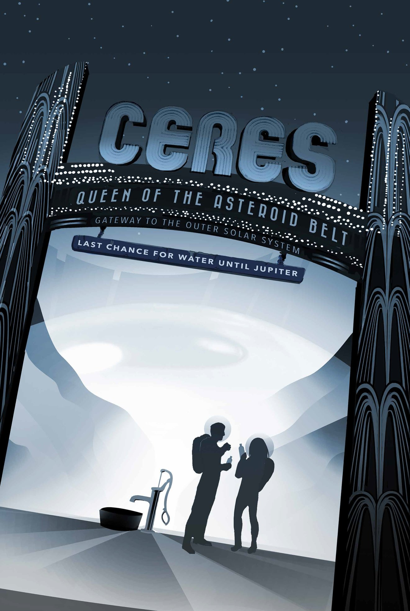

Ceres was the first member of the asteroid belt to be discovered when Giuseppe Piazzi spotted it in 1801. Called an asteroid for many years, Ceres is so much bigger and so different from its rocky neighbors that scientists classified it as a dwarf planet in 2006. When NASA's Dawn arrived in 2015, Ceres became the first dwarf planet to receive a visit from a spacecraft.